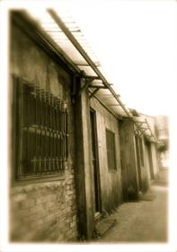
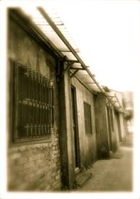

History
 

In late November of year 1948, chinese civil war get into urgent situation. 44 arsenal located in Qingdao and all its employees and families rush onboard the TaiKang warship and arrived in Keelung, Taiwan. They settled in temporarily at the 44 arsenal built in the Japanese ruled era.
44 South Village is the first military village ever formed in Taipei. The employee and their families all rely on the arsenal, looking forward to return to their home in less then 20 years. They started off by using cloths as separation of houses, and started construction of the village. Due to its geological location together with the arsenal, the village was named "44 South Village". The locals usually called it just "south village". As the population grow, east and west village was created. In 1955 the three villages finally came into place, and this place become home to the employee and their families for nearly five decades.
Due to the XinYi development plan and military village reconstruction, the resident all moved out in 1999. The building left behind faced the fate of being demolished. The local resident and professionals in the culture department raised a exercise to preserve the military village tradition. They formed "44 South Village history workshop". Being assessed by the government, it was listed in "Historical buildings" and selected four parallel buildings to preserve and for future development. In 25 November 2003, the village become XinYi recreation center and military village culture park.